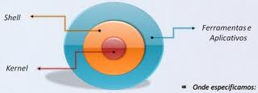
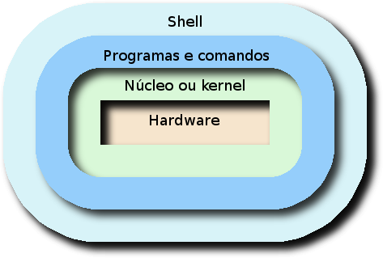
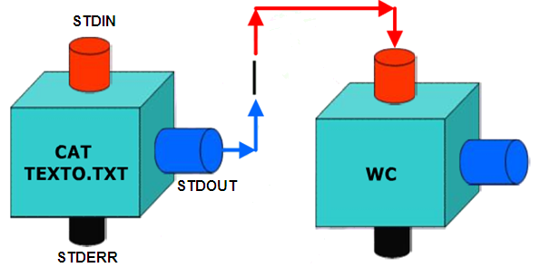

GNU/Linux Basics
UNIVERSIDADE ESTADUAL DO OESTE DO PARANÁ - UNIOESTE
Grupo de Pesquisa e estudos em Software Livre
Objetivo do curso
- A filosofia e as caracteristicas de um sistema GNU/Linux
- Apresentação das ferramentas básicas do sistema
Unix
- O UNIX é um sistema operacional portátil, multitarefa e multiusuário
- Originalmente criado por Ken Thompson, Dennis Ritchie, Douglas McIlroy e Peter Weiner, que trabalhavam nos Laboratórios Bell (Bell Labs) da AT&T
- A marca UNIX é uma propriedade do The Open Group
- Uma característica singular no Unix (e seus derivados) é a utilização intensiva do conceito de arquivo
- Os dispositivos de entrada e saída são classificados como sendo de bloco (disco, p.ex.) ou de caractere (impressora, modem, etc.) e são associados a arquivos mantidos no diretório /dev
O UNIX é dividido básicamente em duas partes
- Núcleo do sistema (kernel): O núcleo do sistema operacional
- Shell: Faz interface entre o usuário e o núcleo

Software livre
Vídeo-aulas sobre software livre e tecnologia.
Kretcheu Vídeo Blog
Projeto GNU
Linux
GNU/Linux

Ambiente em camadas
Caracteristicas
- É de graça
- Desenvolvido voluntariamente por programadores experientes, hackers, e contribuidores espalhados ao redor do mundo
- Multitarefa
- Multiusuario
- Proteção entre processos executados na memória RAM
- Suporte ha mais de 63 terminais virtuais (consoles)
- Conectividade com outros tipos de plataformas como Apple, Sun, Macintosh, Sparc, Alpha, PowerPc, ARM, Unix, Windows, DOS, etc
- Modularização
- Não há a necessidade de se reiniciar o sistema após a modificar a configuração de qualquer periférico ou parâmetros de rede. Somente é necessário reiniciar o sistema no caso de uma instalação interna de um novo periférico, falha em algum hardware (queima do processador, placa mãe, etc.)
- Suporte a diversos tipos de dispositivos
- Vários tipos de firewalls de alta qualidade e com grande poder de segurança de graça
- Acessa sem problemas discos formatados pelo DOS, Windows, Novell, OS/2, NTFS, SunOS, Amiga, Atari, Mac, etc
- ...
Distribuições
GNU/Linux Distribution Timeline
DistroWatch
Estrutura do Sistema
Terminal Virtual (CONSOLE)
CTRL + ALT + F1 .. F7
CTRL + ALT + T
Interpretador de comandos
Também conhecido com a Shell do sistema
- É o programa responsável em interpretar as instruções enviadas pelo usuário e seus programas ao sistema operacional (o kernel)
- Ele que executa comandos lidos do dispositivo de entrada padrão (teclado) ou de um arquivo executável
- É a principal ligação entre o usuário, os programas e o kernel.
- O GNU/Linux possui diversos tipos de interpretadores de comandos, entre eles podemos destacar o bash, ash, csh, tcsh, sh, zsh, etc
Kernel
É o sistema operacional (o ‘Linux’), é ele quem controla os dispositivos e demais periféricos e do sistema (como memória, placas de som, vídeo, HD's, disquetes, sistemas de arquivos, redes e outros recursos disponíveis)
- O kernel faz o controle dos periféricos do sistema e para isto ele deve ter o seu suporte incluído
- Existe um documento que contém os periféricos suportados/não suportados pelo ‘Linux’, chamado de Hardware-HOWTO
- Suas versões são identificadas por números como 2.4.26, 2.6.5, 2.5.75, 3.0.1, 3.1.1, 3.8.0, as versões que contém um número par entre o primeiro e segundo ponto são versões estáveis, e as que contém números ımpares neste mesmo local são versões instáveis (em desenvolvimento)
Filesystem Hierarchy Standard FHS

Sistema de Permissões
Donos, Grupos e outros
Sistemas operacionais multi-usuário têm de zelar pela segurança e privacidade dos dados individuais de cada usuário, bem como prezar pela integridade do sistema. Para isso existem as chamadas permissões de acesso, que atuam em dois aspectos fundamentais. O primeiro é a privacidade e o segundo, a segurança
- O GNU/Linux tem um método muito simples de lidar com permissões. Inicialmente, elas são divididas em duas categorias: as permissões simples e as permissões especiais
As permissões simples atuam liberando ou bloqueando o acesso à leitura, escrita e execução nos arquivos. Existem diversas formas de se demonstrar as permissões de um arquivo
| Permissão | Literal | Octal |
|---|---|---|
| Leitura | r | 4 |
| Escrita | w | 2 |
| Execução | x | 1 |
- Leitura r: A permissão de leitura é a que vai dizer se o usuário tem ou não direito de ver o conteúdo do arquivo ou do diretório
- Escrita w: Essa permissão diz se o usuário terá ou não o direito de modificar o conteúdo do arquivo ou diretório
- Execução x: Por fim, a permissão de execução especifica se o usuário pode ou não executar o arquivo, caso ele se trate de um binário ou de um script. No caso de um diretório, especifica se o usuário poderá ou não acessá-lo
As permissões podem ser aplicadas a
Dono: Chamamos de dono o usuário que criou o arquivo. O sistema de permissões no GNU/Linux permite que alteremos as permissões para nós próprios. Podemos, assim, evitar que, por exemplo, façamos alterações acidentais em arquivos importantes
A identificação do dono também é chamada de userID UID
Grupo: todo usuário do sistema GNU/Linux pertence a pelo menos um grupo. Assim, você pode definir as permissões em nível de grupo
A identificação do grupo é chamada de groupID GID
Outros: Simplesmente, todos os usuários que não são você mesmo nem pertencem ao seu grupo primário
| Usuário | Leitura | Escrita | Execução |
|---|---|---|---|
| Dono | Sim/Não | Sim/Não | Sim/Não |
| Grupo | Sim/Não | Sim/Não | Sim/Não |
| Outros | Sim/Não | Sim/Não | Sim/Não |
-rwxrw-rw-
"-" Arquivo Regular (-rw------)
"d" Diretório (drw------)
"b" Dispositivo de bloco (brw------)
"c" Dispositivo de caractere (crw------)
"p" Canal (prw------)
"s" Socket (srw------)
Vamos Tentar !?
Visualizar permissões do seu diretório
ls
"-a"
"-al"
"-lh"
Uso do Sistema
"su" run a shell with substitute user and group IDs
"sudo" execute a command as another user
"~#"
apt
"No princípio era o .tar.gz. Usuários tinham que compilar cada programa que quisessem usar em seus sistemas GNU/Linux. Quando o Debian nasceu, uma nova forma de gerenciamento de pacotes tornou-se necessário. Para este sistema, foi dado o nome dpkg. Este famoso 'pacote' foi o primeiro a chegar nos sistemas GNU/Linux, enquanto antes a Red Hat decidiu criar seu próprio sistema 'RPM'.
Um novo dilema rapidamente tomou conta das mentes dos criadores do GNU/Linux. Eles precisavam de um método rápido, prático e eficiente para instalar pacotes, que deveriam gerenciar automaticamente as dependências e cuidar dos arquivos de configuração ao atualizá-los. Aqui novamente, o Debian mostrou o caminho e deu vida ao APT, o 'Advanced Packaging Tool'
-- Do Debian APT HOWTO
"dpkg" package manager for Debian
Pacotes do tipo
.deb
"apt" Advanced packaging tool
O apt é um poderoso gerenciador de pacotes que resolve as complicações de dependências de pacotes automaticamente para o usuário, utilizando também a instalação dos pacotes via Internet. Com o apt é possível baixar a versão mais atual de um programa e instalá-lo no sistema com apenas um comando
Repositórios
Oficiais
Locais
ppa Personal Package Archive
Vamos tentar !?
Atualizar o sistema que acabamos de instalar
~# apt-get
"moo"
"update"
"upgrade"
"install [pacote a ser instalado]" pacote: cowsay
Shell
Editores de texto
"vi" .
"vim".
"nano".
"gedit".
"sed".
Uso das ferramentas da Shell
man !
--help !
Manipulação de Arquivos e diretórios
"ls" list
"cd" change directory
"pwd" print working directory
"mv" move
"cp" copy
"mkdir" make directory
"rmdir" remove directory
"rm" remove files or directories
"ln" make links between files
Vamos Tentar !?
Liste o diretório e descubra as pastas disponivéis
Crie uma pasta com nome qualquer
Copie a pasta para o diretório Desktop
Liste a pasta Desktop, e veja se a pasta se encontra lá
Remova a pasta do seu diretório atual
Manipulação de Arquivos
"cat" concatenate files and print on the standard output
"wc" print the number of bytes, words, and lines in files
"more" file perusal filter for crt viewing
"less" opposite of more
"head" output the first part of files
"tail" output the last part of files
"touch" change file timestamps
Vamos Tentar !?
Usando o cat, visualize o conteúdo do arquivo "examples.desktop"
Faça o memo, agora usando less
Qual o numero de linhas do arquivo ?
Quais são as 3 primeiras linhas ?
Imprima as ultimas 3 linhas do arquivo
Entrada, Saída, Erro e Redirecionamento
Entrada (input): entrada padrão (standard input ou STDIN)
Saída (output): saída padrão (standard output ou STDOUT)
Erro (error): erro padrão (standard error ou STDERR)

"<" Redireciona a entrada padrão (STDIN)
">" Redireciona a saída padrão (STDOUT)
"2>" Redireciona a saída de erro (STDERR)
">>" Redireciona a saída padrão, anexando
"2>>" Redireciona a saída de erro padrão, anexando
"|" Conecta a saída padrão com a entrada padrão de outro comando
"2>&1" Conecta saída de erro na saída padrão
">&2" Conecta a saída padrão na saída de erro
">&-" Fecha a saída padrão
"2>&-" Fecha saída de erro
"<" Redireciona a entrada padrão (STDIN)
"<< FIM" Alimenta a entrada padrão (HERE DOCUMENT)
"<<- FIM" Alimenta a entrada padrão, cortando Tabs
2>&1 /dev/null
Compactação
"tar" The GNU version of the tar archiving utility
"bzip2" "bunzip2" a block-sorting file compressor
"gzip" "gunzip" compress or expand files
"7-zip"
Rede
"ifconfig" configure a network interface
Vamos Tentar !?
ifconfig
Sistema e Diversos
"clear" clear the terminal screen
CTRL + L
"reboot" "halt" "poweroff" stop the system
"shutdown" bring the system down
Administração
usuários, grupos e permissões"adduser" create a new user or update default new user information
"useradd" create a new user or update default new user information
"addgroup" add a user or group to the system
"groupadd" create a new group
"usermod" Modify a user account
"passwd" password file
"userdel" delete a user account and related files
"id" print real and effective UIDs and GIDs
"w" show who is logged on and what they are doing
"chown" change file owner and group
"chmod" change permissions of a file
Vamos Tentar !?
Crie um novo usuário
Crie um novo grupo
Adicione o usuário ao novo grupo
Liste os arquivos da pasta pessoal do novo usuário
Abra um console disponível e logue com o novo usuário
volte ao ambiente gráfico e veja os usuários que estão logados
Seja livre, use Linux!
!?
Obrigado!!!
Desenvolvido por:
Kenner A. Kliemann
Leandro J. Pagno
Reveal.js
HTML Presentations Made Easy
Created by Hakim El Hattab / @hakimel
Links úteis
The Linux Documentation Project
Grupo de estudo e pesquisa em software livre no Facebook
...